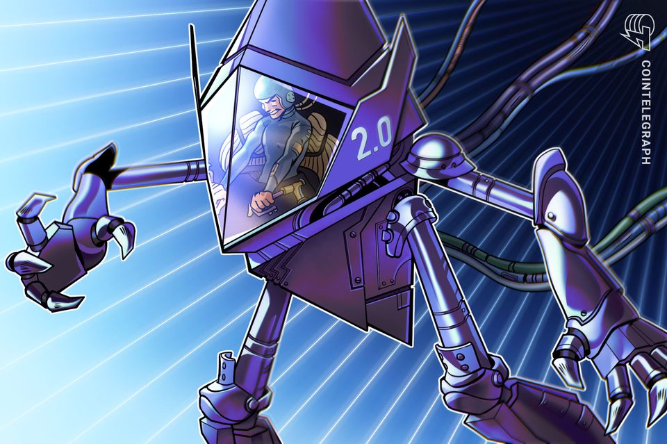
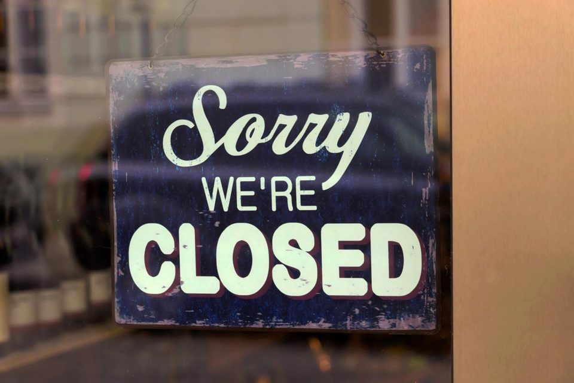
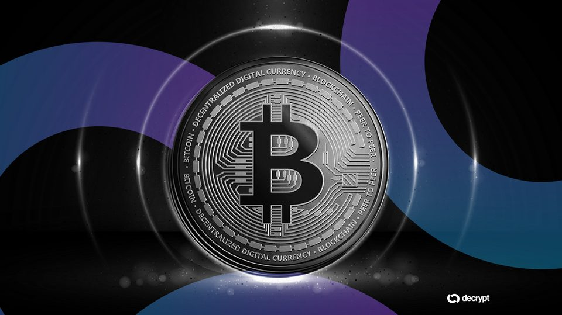
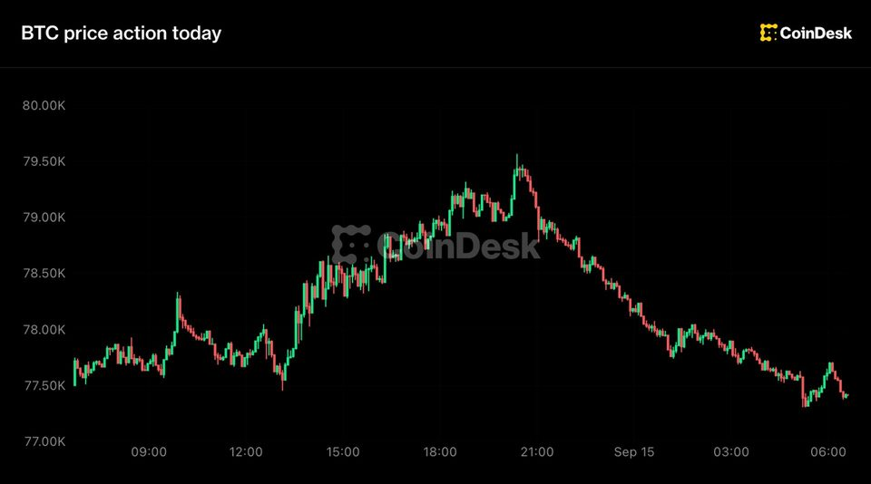
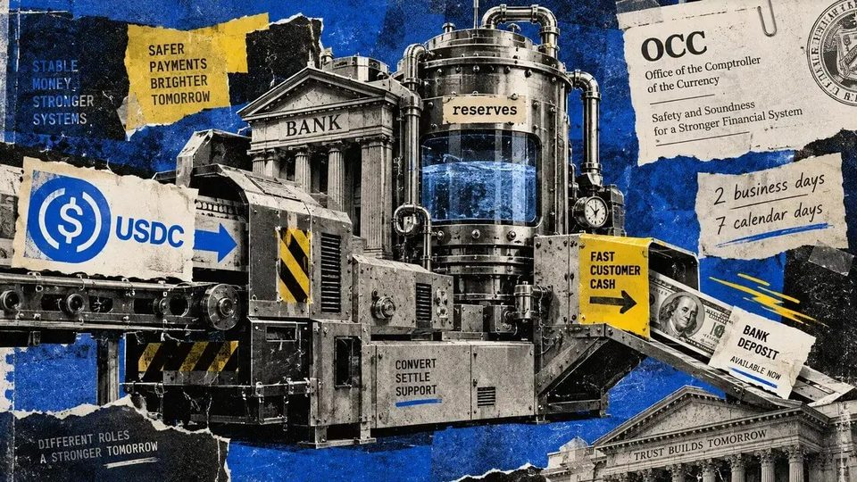
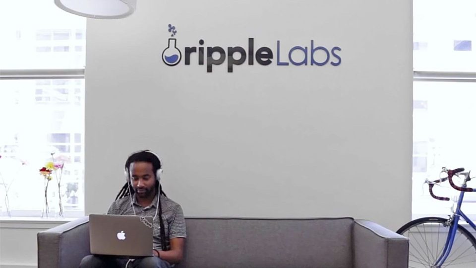
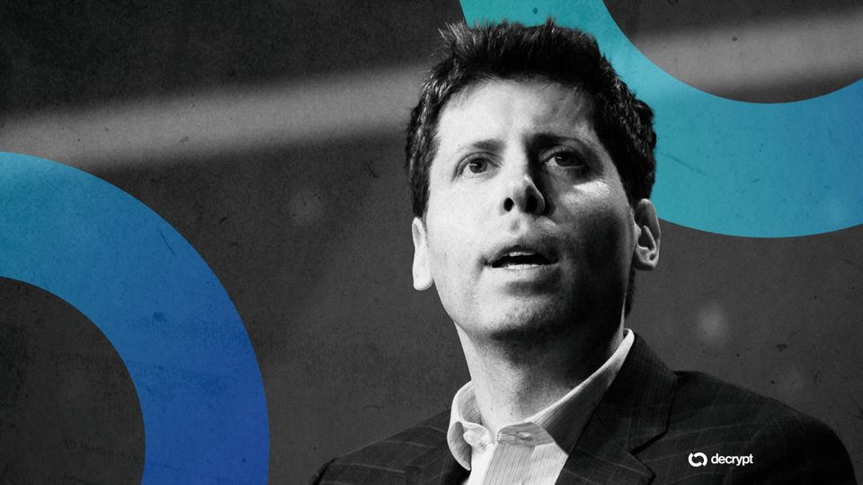

September 15, 2026
Daily headline set with source diversity, cleaned links, and local static rendering.

Ethereum, Base wallet standards talks fail, Ethlabs researcher says
Ethereum and Base are pursuing different account abstraction designs after talks failed, according to Ethlabs researcher Derek Chiang.
The US Bitcoin reserve faces a crucial bipartisan test Wednesday
The American Reserve Modernization Act (ARMA) would put the federal government's Bitcoin reserve into law for the first time. But ahead of its first House committee vote on Sept. 16, the bill has attracted just one...

Hong Kong crypto exchange CoinEx to cease operations after 9 years in business
Hong Kong crypto exchange CoinEx to cease operations after 9 years in business

Strive's Bitcoin Stash Hits an Even 25,000 BTC After $36.6 Million Buy
The asset manager funded the entire purchase through preferred stock, pushing SATA's notional value past $1 billion for the first time.
Bitcoin short-term holders hit 30-day profit streak as bull-market odds improve: CryptoQuant
Bitcoin short-term holders approached a full month in partial profit as analysis saw improving odds of an enduring bullish BTC price reversal.
Bitcoin self-custody creates a massive cost-basis blind spot on your 2026 crypto tax forms
Under 2026 US rules, transferred coins remain outside mandatory basis reporting even when the investor's purchase cost is unchanged. The post Bitcoin self-custody creates a massive cost-basis blind spot on your 2026...

Live updates: Bitcoin slides from nearly $80,000 as Senate votes on Clarity Act
Live updates: Bitcoin slides from nearly $80,000 as Senate votes on Clarity Act
Banks Want More: Trade Groups Demand Stricter Stablecoin Limits in Clarity Act
Eight trade associations say exceptions for interest-like rewards could pull deposits from banks and reduce lending.
US seeks $61M in USDT allegedly tied to sanctioned Iranian oil sales
Tether froze $61.19 million across 10 Tron addresses in 2025 that prosecutors allege were connected to black-market Iranian oil proceeds.

Proposed stablecoin rules might guarantee your dollar while making you wait a week to spend it
Proposed OCC redemption extensions leave buyers and conversion providers to finance an earlier exit when they pay before recovering dollars. The post Proposed stablecoin rules might guarantee your dollar while making...

XRP Ledger is one vote away from starting its next big payments upgrade
XRP Ledger is one vote away from starting its next big payments upgrade

OpenAI's Sam Altman Warns Humans Could Lose Control of AI
The OpenAI chief called for safeguards during training and shared industry standards, saying developers can act before legislation arrives.